📆 2026/03/06
資料視覺化_POWERBI
🏠 首頁
一 ｜ 製作步驟簡述
本報告涵蓋了三種不同層次的工具操作流程：
📌 Microsoft Power BI ：
- 安裝 Power BI Desktop 軟體。
- 載入 Excel 等範例資料檔案。
- 建立直方圖或折線圖，快速進行數據洞察。
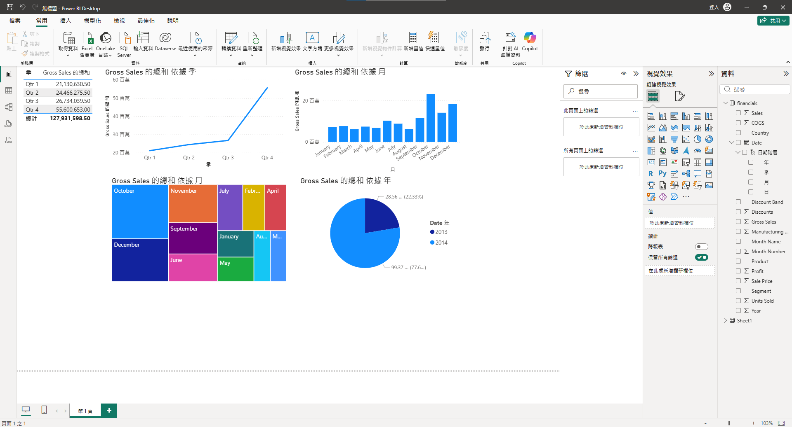
圖 1-1: Power BI 介面載入 Excel 資料並快速建立直方圖、折線圖進行數據分析
📌 Visual Studio Code 與 Python ：
- 在 VS Code 中配置 Python 執行環境。
- 使用 Pandas 套件讀取數據資料。
- 利用 Matplotlib 或 Seaborn 繪製更具靈活性的分析圖表。
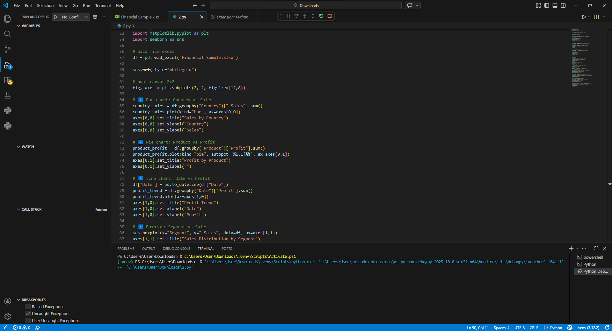
圖 1-2: 在 Visual Studio Code 環境中配置 Python 執行程式碼
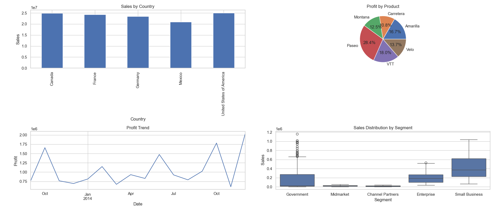
圖 1-3: 使用 Python (Pandas/Matplotlib) 成功讀取並輸出更具自由度的分析圖表結果
📌 Claude AI 輔助工具 ：
- 將數據上傳至 AI 專案空間。
- 透過指令工程 (Prompt Engineering) 輸入分析需求。
- 由 AI 自動產生成圖表並提供商業策略建議。
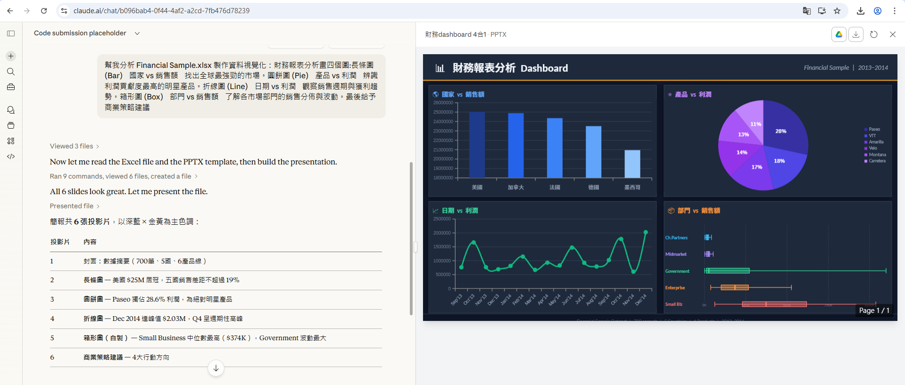
圖 1-4: 利用 Claude AI 工具進行資料對話，快速產生成圖表與精準策略分析
二 ｜ 製作目的
本報告旨在展示對多樣化數據處理工具的掌握能力。透過整合 商業智能軟體 (Power BI)、 程式分析 (Python) 與 人工智慧應用 (Claude)，學習如何從不同維度處理大數據，並將其轉化為直觀的視覺化資訊，以輔助未來精準的商業決策。✨
三 ｜ 學習心得
- 工具多元化應用 ： 掌握了從手動操作工具到程式化分析，再到 AI 協作的全方位數據處理技能。
- 靈活性與效率並重 ： 理解到 Power BI 適合快速生成圖表，而 Python 則能提供更高的分析靈活性與自動化可能。
- AI 的輔助價值 ： 學會利用 AI 工具加速報告生成與策略分析，體會到新技術對提升工作效率的影響。
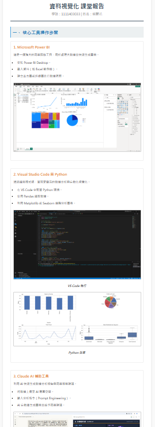
圖 1-5: 03/06 報告網站頁面預覽
📆 2026/03/13
基本操作與爬蟲
🏠 首頁
一 ｜ 製作步驟簡述
這份報告記錄了從數據處理到視覺化呈現的五個核心步驟：
-
數據運算 ： 使用 DAX 函數（如
DATEDIFF）計算員工工齡。
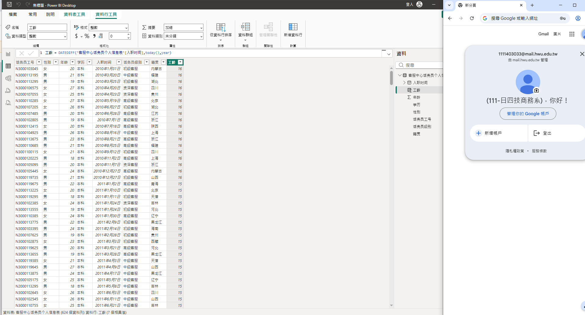
圖 2-1: 撰寫 DAX 函數新增計算資料行，精確求出每位員工的工齡年資
-
欄位管理 ： 調整年齡欄位的屬性並設定「依序排序」，確保邏輯正確。
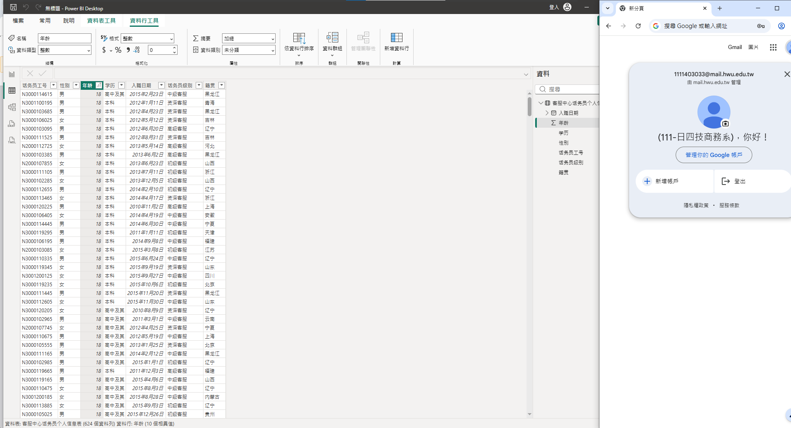
圖 2-2: 對年齡分布區間欄位進行依序排序管理，避免圖表軸線邏輯混亂
-
建立資料關聯 ： 將「客服中心個人資料」與「話務呼入量數據」透過共同欄位（如工號）建立關聯，實現跨表查詢。
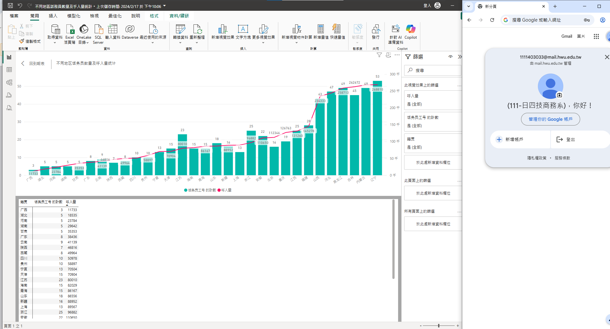
圖 2-3: 在模型視圖中建立多表關聯，完美串接客服個資與話務呼入數據
-
視覺化設計 ： 採用「集點模式」呈現地區話務分佈，並使用柱狀圖分析呼入量。
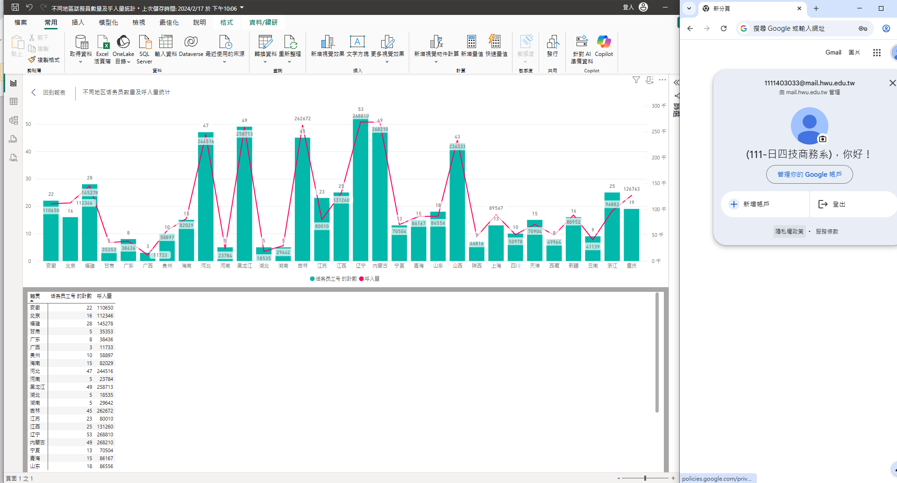
圖 2-4: 採用集點圖案呈現各區域話務分佈，營造直觀的群聚效應視覺效果
-
報表優化 ： 應用遞減排序（由大到小）優化籍貫分布圖，提升閱讀效率。
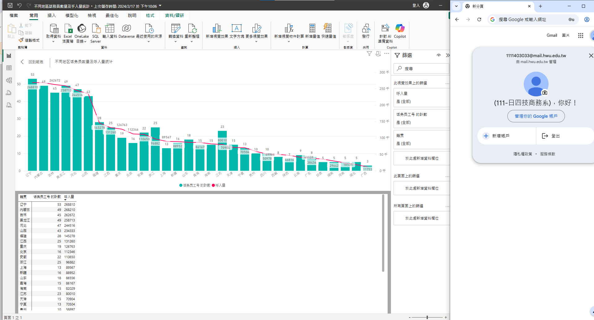
圖 2-5: 套用由大到小的遞減排序規則，優化籍貫分佈的判讀流暢度
二 ｜ 製作目的
本報告的主要目的是透過 Power BI 工具，將原始的人力資源與話務數據轉化為 易於理解的視覺化圖表 。透過這些圖表，管理者可以快速掌握員工年資、年齡分佈、各地區業務負荷（呼入量）以及人才來源（籍貫）等關鍵資訊，進而輔助決策。📈
三 ｜ 學習心得
- 從數據到資訊 ： 學會將原始日期轉換為「年資」等指標，才能讓數據產生分析價值。
- 細節決定品質 ： 透過正確的欄位排序與「集點模式」，能有效避免邏輯混亂，並清晰展現數據的群聚效應。
- 重點導向設計 ： 遵循「由大到小」的排序邏輯（如 Pareto 原則），能幫助使用者在短時間內抓住報表重點，這對於商務報表至關重要。
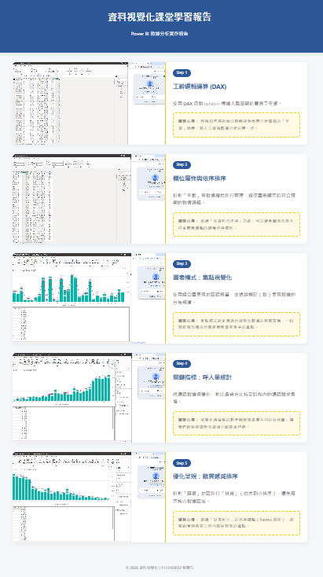
圖 2-6: 03/13 報告網站頁面預覽
📆 2026/03/20
各式資料連結與XML氣候資料呈現
🏠 首頁
一 ｜ 製作步驟
報告涵蓋了兩個主要實作項目：
🌤️ XML 氣象實作 ：
使用 Python Flask 框架抓取 CWA 中央氣象署開放資料，解析 XML 標籤，並套用「磨砂玻璃」 (Glassmorphism) 設計風格美化前端網頁介面。

圖 3-1: 藉由 AI (Gemini) 協助生成解析中央氣象署 XML 結構的 Python 程式碼段
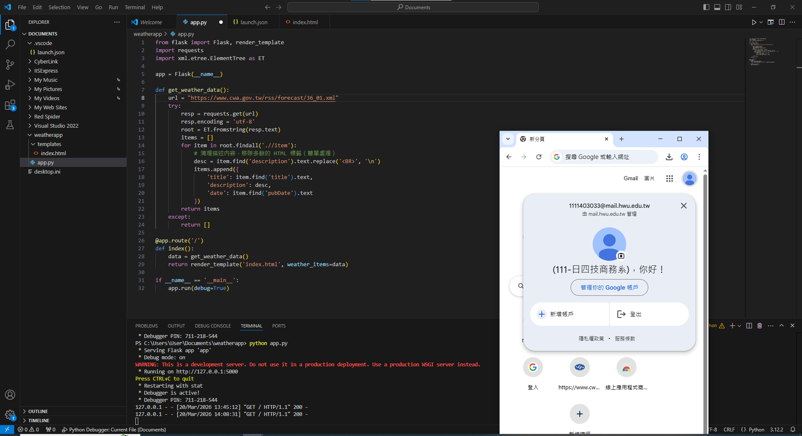
圖 3-2: 於 VS Code 中執行 Python Flask 氣象站後端伺服器程序
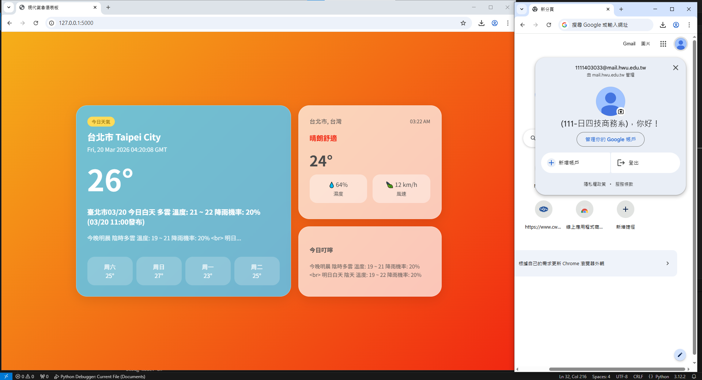
圖 3-3: 最終產出具磨砂玻璃美感、能即時動態呈現即時氣象資訊的網頁介面
📊 Power BI 數據分析 ：
- 資料清洗 ： 在 Power Query 編輯器中明確設定各欄位的資料型態（如日期、數值等轉型）。
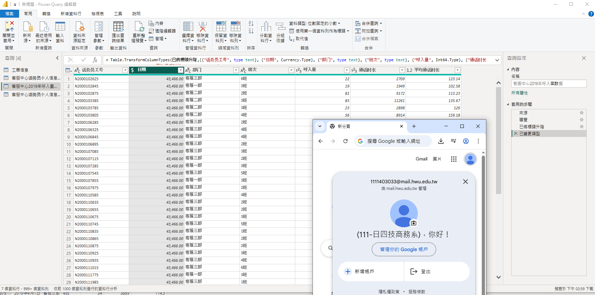
圖 3-4: 進入 Power Query 進行型態檢查、清除雜訊以維持高數據品質
- 建模 ： 建立員工工號與通話紀錄之間的一對多或一對一關聯性。
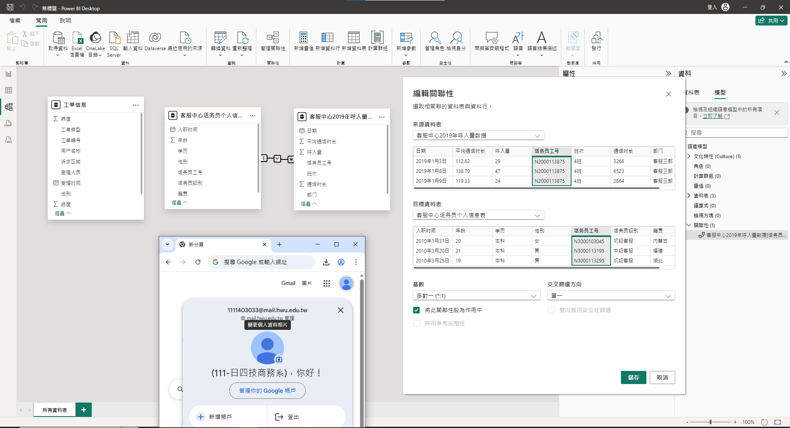
圖 3-5: 於 Power BI 模型視圖中精確拖曳、編輯客服資料表間的鍵值關聯
- 視覺化 ： 製作圓餅圖與對比報表，分析話務員學歷背景（如本科與大專）與其呼入通話績效的關聯。
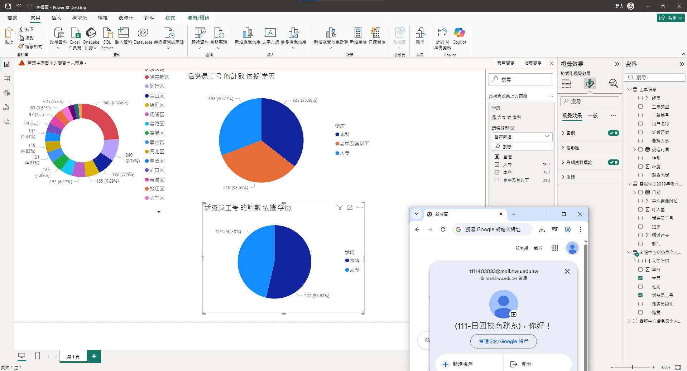
圖 3-6: 產出直觀的學歷結構圓餅圖及績效對比矩陣圖
二 ｜ 製作目的
本報告旨在展示如何將原始資料（XML 與客服中心數據）轉化為視覺化資訊。透過 Python 建立動態氣象網頁，並利用 Power BI 深入分析企業數據，從中發掘學歷與通話量之間的關聯，輔助決策分析。💡
三 ｜ 實作心得
- 技術結合 ： 體會到資料結構（XML）與前端美學（CSS）連動的重要性。
- 數據品質關鍵 ： 認識到「數據清洗」是視覺化過程中最重要的基礎步驟。
- 數據說故事 ： 學會將枯燥的數據轉換為有故事感的圖表，對資料科學的完整流程有了系統化的掌握。
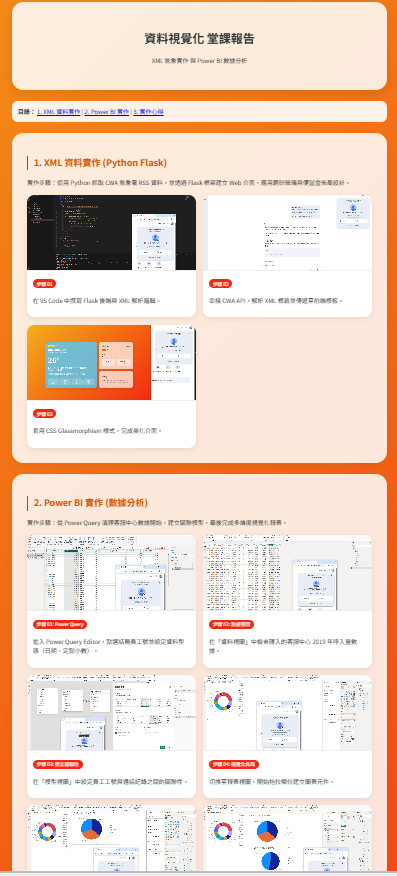
圖 3-7: 03/20 報告網站頁面預覽
📆 2026/03/27
進銷存資料庫建立與資料視覺化
🏠頁首頁
一 ｜ 製作步驟簡述
本報告主要分為兩個實作階段：
🌐 Power BI 數據整合 ：
- 連接多種外部數據源，包括 XML、JSON、PDF、Access 以及整個資料夾資料庫。
圖 4-1: 橫向展示對 XML, JSON, PDF, Access 資料庫及本地資料夾的多源整合導入
- 將提取出的地理經緯度數據進行整合，並直觀視覺化呈現於世界/區域地圖中。
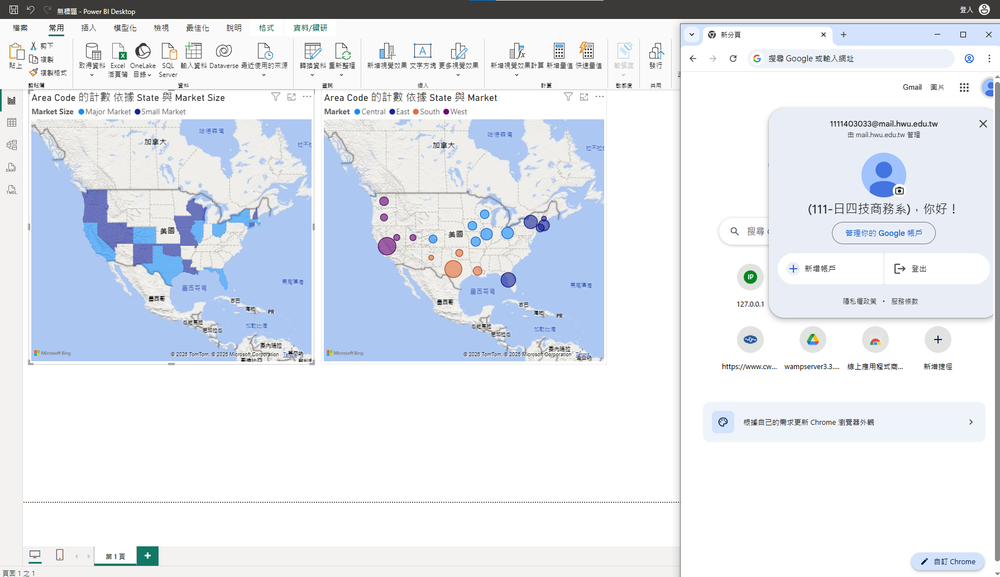
圖 4-2: Power BI 地圖視覺效果，將分佈在全球的供應商與銷售網絡動態呈現在地圖上
🧸 Toy Inventory 玩具進銷存系統開發 ：
二 ｜ 製作目的
本報告旨在展示如何整合不同來源的數據並應用於實際管理場景：
- 透過 Power BI 實作跨源數據整合，練習將枯燥且混亂的檔案格式轉化為直觀易讀的決策分析地圖。
- 透過 Flask 框架 開發系統，學習建立具備「動態資料管理、增刪改查」功能的完整 Web 應用程式，實現營運數據的即時維護與查詢。
三 ｜ 學習心得
- 數據洞察與管理並重 ： 學會了 Power BI 擅長的「數據洞察」（將各種格式轉為決策圖表）與 Flask 擅長的「流程管理」（即時增刪改查資料）之間的差異。
- 工具互補性 ： 理解到數據不僅可以被用來「分析」，也可以透過系統被有效地「管理」。
- 實務應用價值 ： 透過兩者的結合，能更全面地發揮數據價值，從前端的日常營運維護到後端的分析決策都能系統化掌握。
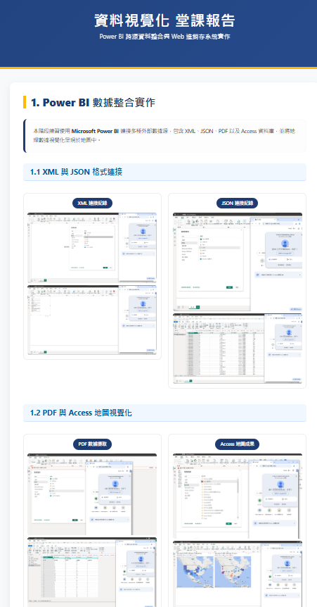
圖 4-6: 03/27 報告網站頁面預覽
📆 2026/04/10
資料清洗與PM2.5案例
🏠 首頁
一 ｜ 製作步驟簡述
本報告記錄了四個主要的實作練習步驟：
🛠️ DAX 資料處理 ：
利用 [province] & "," & [city] 文字公式合併省份與城市欄位，打破孤立欄位結構，並透過高級樹狀圖與分佈地圖精確呈現全國各地區銷售與利潤分佈。
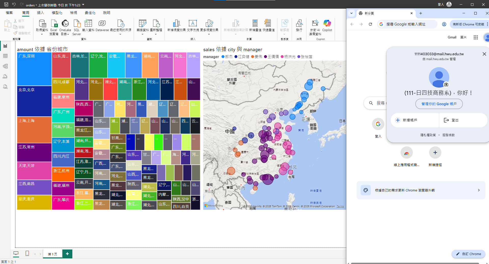
圖 5-1: 利用字串串接公式合併地理資訊，優化階層分析維度
🔗 管理關聯性 ：
將「客服中心個人資料」與「呼入量數據」透過主鍵「工號」建立精確的一對一 (1:1) 關聯模型，實現跨越資料表的聯合深度數據查詢。
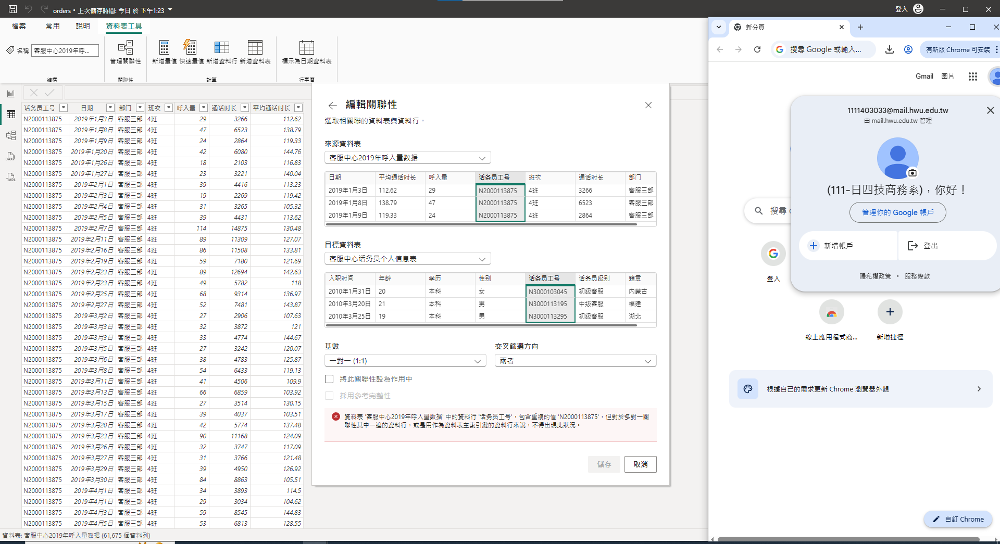
圖 5-2: 建立強大的 1 對 1 資料建模，維護關聯實體完整性
🧼 Web 資料擷取與清理 ：
從國家統計局導入最新房屋價格 Web 資料，在 Power Query 編輯器中強效執行刪除 Null 空值、取代 0 異常值、附加多個季度查詢等進階清理動作，最終漂亮產出房價波動區域趨勢分析圖。
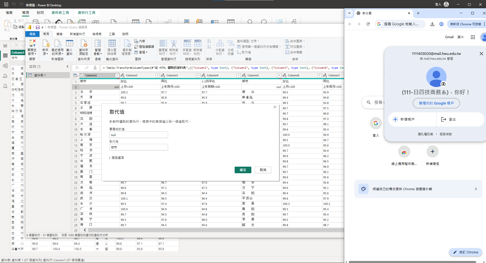
刪除空值 (Null)
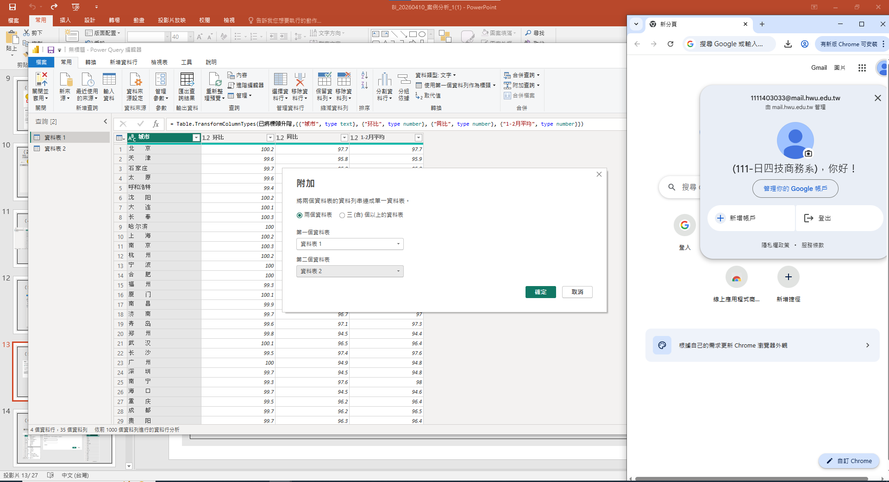
附加查詢 (Append)
圖 5-3: 展示刪除空值、取代雜訊、合併附加多表查詢到產出房價分析地圖的串流工序
☁️ 文字雲應用 ：
針對政府開放資料平台下載的全球/全台 PM2.5 空氣品質監測大數據進行核心關鍵字斷詞與頻率分析，動態製作出具高度資訊美感的視覺化文字雲 (WordCloud)。
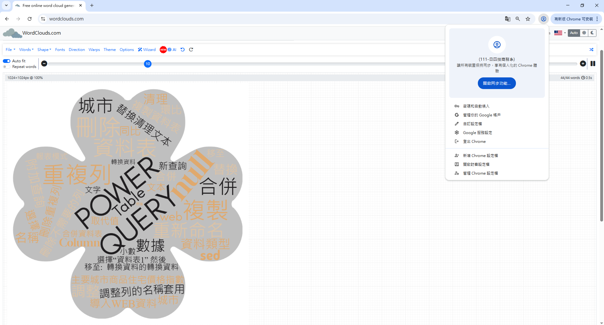
圖 5-4: PM2.5 監測數據核心城市及關鍵汙染源字根之視覺化文字雲圖案
二 ｜ 製作目的
本報告的核心目標在於練習如何使用 Power BI 整合多元數據源（如 Web、Excel 等），並透過 DAX 公式 與 Power Query 進行精確的資料清洗與建模。最終目的是將枯燥的數值轉化為直觀的地圖、區域圖與文字雲，以提升數據的分析價值與判讀效率。🎯
三 ｜ 學習心得
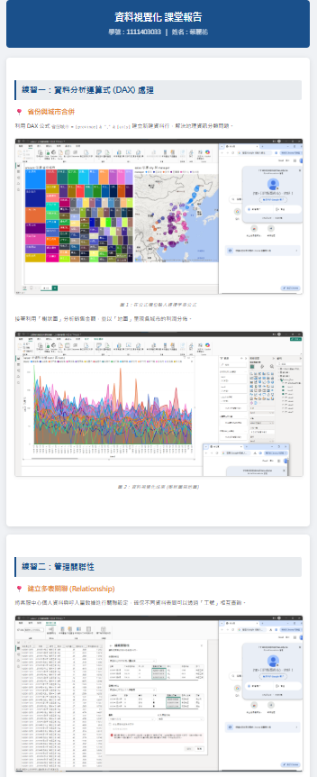
圖 5-7: 04/10 報告網站頁面預覽
一 ｜ 製作步驟簡述
本報告記錄了從基礎開發到 AI 協作與網端部署的五個作業階段：
💻 後端系統開發 ：
使用 Python Flask 框架建立「終極密碼」數字猜測遊戲核心邏輯，實作輕量級 HTTP 伺服器與客戶端前端的初步動態互動。

Flask 專案目錄結構

前端網頁程式碼

網頁遊戲基礎運行畫面
圖 6-1: 基於 Flask 後端開發的終極密碼遊戲檔案目錄結構、網頁前端程式碼與基礎運行視窗
📱 響應式前端設計 ：
配合跨裝置需求，轉向 HTML、CSS 與 JavaScript 純前端高響應式機制開發，確保遊戲炫彩 UI 能完美自動適應任何尺寸的手機與行動裝置螢幕。

Gemini 佈局建議

響應式網頁程式碼優化

優化後的網頁遊戲畫面
圖 6-2: 諮詢 Gemini 改良為美觀的前端響應式 CSS、程式碼優化及實際用 Live Server 預覽畫面
🚀 GitHub 版本控制與發布 ：
在本機配置 Git 指令，建立線上 GitHub 遠端倉庫 (Repository) 進行程式碼程式碼版本管控，並完全利用免費的 GitHub Pages 靜態主機服務將網頁遊戲部署至雲端網際網路，完美實現用手機掃描即玩！

選擇 GitHub 設定

GitHub 專案應用與管理

上傳 HTML 網頁檔案
圖 6-3: 將完整的程式碼發布、同步至 GitHub 程式碼庫並啟動 GitHub Pages 自動發布發行
🤖 AI 協作重構 ：
雖然因本機電腦環境下載安裝限制無法順利安裝 Cursor 編輯器，但我們仍強力實踐 AI-Pair Programming (雙人AI協作編程) 精神，深度利用 Google Gemini 進行全程式碼重構、優化演算邏輯與前端元件美感調整。
.png)
線上諮詢 Gemini 排除下載限制

Gemini 協作重構前端網頁程式碼

重構後的網頁遊戲運行畫面
圖 6-4: 在缺少 Cursor 編輯器下靈活轉用 Gemini 網頁端排除萬難、重構前端邏輯之成果
🧙♂️ 多樣化 AI 工具應用 ：
交替運用 Claude.ai 工具，協助開發更為複雜的進階版遊戲功能（如多級難度自訂選擇、歷史勝率與猜測次數統計面板），大幅度優化使用者體驗的互動細節。

使用 Claude.ai 進行重構諮詢

Claude.ai 程式碼優化成果

進階版網頁遊戲互動畫面
圖 6-5: 使用 Claude.ai 進行程式重構，擴充出驚艷、附帶歷史統計與難度切換的極致遊戲畫面
二 ｜ 製作目的
本報告的核心目標是透過「終極密碼」遊戲的實作，學習從 0 到 1 打造一個具備專業質感的網頁應用程式。除了掌握後端框架（Flask）與前端技術（HTML/JS）外，更重要的是學習如何結合 AI 協作工具 提升開發效率，並透過 GitHub 掌握現代化的軟體發布流程。🕹️
三 ｜ 學習心得
- AI 協作的效率革命 ： AI 工具不僅能代寫程式碼，更是釐清邏輯與學習新技術（如 Tailwind CSS）的最佳導師。
- 邏輯重於工具 ： 即使遇到軟體安裝困難（如 Cursor），只要掌握正確的「開發者思考邏輯」，依然能透過與 LLM 對話達成開發目標。
- 跨平台實踐經驗 ： 從後端邏輯到前端響應式介面，再到雲端部署，獲得了完整的全端開發實踐經驗，對資料視覺化與互動設計有更深的理解。
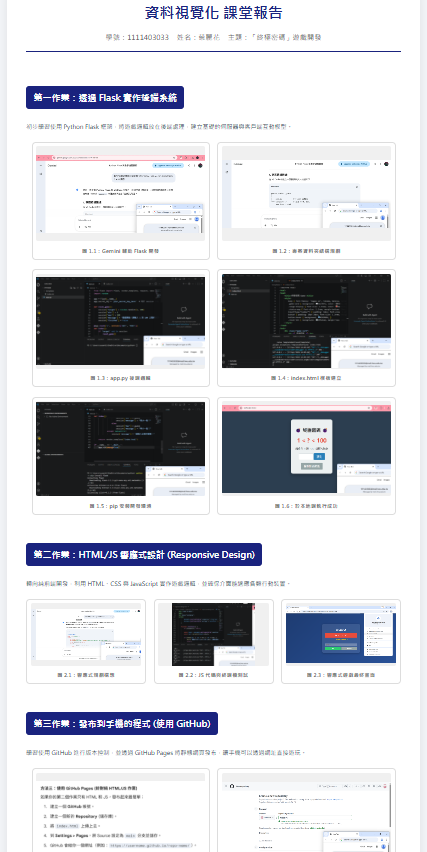
圖 6-6: 04/17 報告網站頁面預覽
一 ｜ 製作步驟簡述
本報告記錄了從 Power BI 進階功能探索到轉向 Python 高階客製化程式開發的完整演進過程：
🚀 Power BI 視覺化擴展 ：
成功載入電子商務訂單大數據 orders.xlsx 資料，並透過 Power BI 官方商城 AppSource 安全導入 Inforiver進階財務表格 與 Tornado Chart (龍捲風對比圖) 等高階市場視覺效果外掛元件。

取得 Excel 訂單資料

瀏覽與下載更多視覺效果
圖 7-1: 順利串接電商訂單主表並打開 Marketplace 搜尋加載進階視覺元件

Inforiver 城市與金額分析

Tornado Chart 店名、產品、利潤分析
圖 7-2: 採用 InfoRiver 矩陣展示各城市銷售額，以及用龍捲風圖深度剖析店名、產品與利潤結構對稱性
💡 AI 諮詢與方案尋求 ：
在嘗試於本機 Power BI 整合安裝 R 語言環境時發生無法克服的系統配置報錯。為突破瓶頸，我們立即轉向諮詢 Gemini AI，獲得利用 Python 編寫獨立互動網頁的強大替代技術方案。

圖 7-3: 在 Power BI 因 R 語言安裝報錯受阻時，有條不紊地透過 Gemini 引導轉向 Python Dash 開發路徑
🖥️ VS Code 開發環境建立與最終成果實現 ：
在 VS Code 中成功配置 Python 虛擬環境，引進 Dash 與 Plotly 網頁型動態資料框架。將 AI 生成的複雜前端互動腳本進行重構與多輪排錯。最終，成功透過程式碼產出包含「橫條圖」、「雷達圖」、「圓環圖」與「折線圖」的極致流暢互動式企業數據商情儀表板網頁！但在實作中發現，有部分「直條圖」元件因為相容性原因在網頁中意外地無法順利顯現出來。

圖 7-4: 於 VS Code 中密集配置 Dash 服務、修復邏輯錯誤與前端樣式

圖 7-5: 企業商情儀表板最終動態呈現
二 ｜ 製作目的
本報告旨在探索多元的資料視覺化途徑。核心目的在於練習如何超越單一套裝軟體（Power BI）的功能或權限授權限制，透過 AI 協作 與 Python 程式全端開發（VS Code），實現更高自由度、自動化的商業數據動態呈現方式，並全方位比較不同工具在企業商情分析中的底層優劣。📊
三 ｜ 學習心得
- 工具靈活應用 ： 體會到雖然 Power BI 操作快速，但在面對本地環境限制與版權限制時，具備程式基礎（VS Code）能提供更高的開發自由度且完全不受授權束縛。
- AI 輔助開發 ： Gemini AI 能提供精準的邏輯框架與模組結構，但仍高密度需要開發者具備程式碼閱讀、環境判斷與修正程式碼的自主除錯能力。
- 解決問題的能力 ： 在面對 R 語言環境毀損、部分圖表因相容性或路徑出錯而完全不顯示等技術高牆時，學會透過檢查資料行對應、更新套件版本來一步步排除故障，大幅增強對數據工程的掌控力。
- 個人偏好 ： 相較於視覺化套裝套件，我個人更傾向並熱愛使用 VS Code 的世界！因為透過一行行親手撰寫的程式碼實現華麗的動態特效，能帶來不可比擬的成就感與完全控制的自主權。
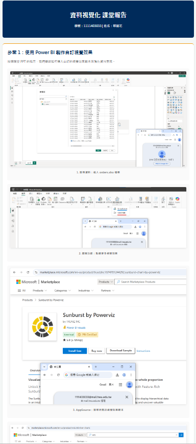
圖 7-6: 05/08 報告網站頁面預覽
📆 2026/05/15
客戶行為分析儀表板
🏠 首頁
一 ｜ 製作步驟簡述
本報告記錄了從商業數據智能整合到多維度視覺化呈現，以及後半部嘗試 AI 自動化架構網頁開發的完整實踐過程：
👥 Power BI 數據處理與建模 ：
將真實商業環境中的 CUSTOMERS (客戶主表) 與 ORDERS (訂單明細表) 進行多源導入，在模型關係區精確建立多對一的數據鏈接模型。

圖 8-1: 導入兩張核心資料表並在 Power BI 中完成交叉維度關聯
📊 多維度視覺化分析與儀表板優化 ：
利用多元化精準圖表剖析核心電子商務有效客戶的性別比重、學歷水平、年齡區間、年收入分佈、職業種類以及核心客戶價值類別(Custcat)。其後複製第一頁主表，進行深度視覺效果重塑，推出了兩種截然不同的設計風格：
- 效果A風格： 重視宏觀指標、大區區塊銷售利潤比對。
- 效果B風格： 重點分析整體客戶數量的月度走勢趨勢（區域圖）以及跨省市的全國地理分佈（高級樹狀圖維度）。

圖 8-2: 客戶行為分析優化儀表板 - 效果A風格大器呈現

圖 8-3: 客戶行為分析優化儀表板 - 效果B風格 (著重於月度波動區域圖與省市樹狀分佈圖)
🤖 AI 進階實作嘗試 ：
諮詢 Gemini AI 自動化建立網頁資訊架構，試圖在 VS Code 中直接利用 Python Flask 後端框架 與前端指令碼，一鍵自動化建立完全脫離 Power BI 限制的獨立客戶數據儀表板網頁。

Gemini 生成資訊架構建議

VS Code 環境配置與腳本編寫
圖 8-4: 在 Gemini 網頁中獲取 Flask 架構建議，並在本機 VS Code 中佈署實施
二 ｜ 製作目的
本報告的主要目的是利用 Power BI 工具深入探索電子商務客戶的核心特徵，包含人口統計（性別、年齡、學歷）與經濟狀況（收入、職業、客戶價值），以輔助制定降低客戶流失率的精準策略。同時，透過嘗試 AI 自動化網頁分析，全面評估與對比不同技術工具在實際商業數據對接與即時雲端佈署上的可行性、局限性與研發效率。
三 ｜ 學習心得
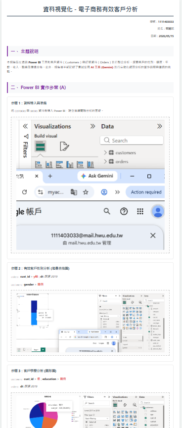
圖 8-6: 05/15 報告網站頁面預覽
1. 跨領域的學習與啟蒙 🚀
作為一名來自國際商務系的跨科系學生，我真的非常慶幸、也無比感激自己當初鼓起勇氣選擇並堅持讀完了這門高強度的資料視覺化課程。在修這門課之前，對於我這種純商科背景的人來說，「寫程式（Coding）」是一個從未在生命中出現過、甚至覺得是一輩子都遙不可及、高深莫測的理科領域。🎉
然而，透過這整整一個學期高密度的課堂紮實練習，我從最初一個連 Power BI 介面都完全沒看過的程式小白，跟著老師的腳步，一步步學會了操作，甚至到後來能夠逐漸理解 VS Code、Python 程式碼、Flask、Dash 的核心底層運作邏輯。這段跨領域的學習歷程徹底打破了我對編程的心理高牆，我不僅添加了一個強大的電腦實務技能，更真正掌握了當代職場最核心的數據科學基礎與邏輯思維。
2. 核心工具與技術掌握 🛠️
在整學期的扎實課堂實作中，我完整構建了全方位的數據處理武器庫：
- Power BI 數據智能： 深度掌握了從原始雜亂數據進行 Power Query 洗滌清洗、大數據型態轉換、多表複雜一對多一對一關聯建模，到靈活撰寫 DAX 函數行，並親手製作出直觀、高互動性的商務決策儀表板。
- 程式開發與 AI 雙人協作： 成功學會在 VS Code 中配置 Python 開發環境，調用 Pandas、Plotly、Dash 等專業庫，並極具前瞻性地學習了如何跟 Claude AI 和 Google Gemini 進行精準的指令工程 (Prompt Engineering) 協作，大幅提升排除系統故障與優化程式碼的革命性效率。
3. 實作中的技術挑戰與令人挫折的困境 ⚡
儘管每週的成果都讓人興奮，但對於非資訊背景的我來說，這一路上其實充滿了無數次令人抓狂和挫折的技術瓶頸：
- 網頁圖表與影像顯示的巨大困境： 在後半學期開發 Web 應用程式與儀表板網頁時，常常遇到即便我已經非常小心地準備好、並在程式碼中正確連結了基礎資料檔案與圖形路徑，但網頁在瀏覽器跑出來時，圖片或動態視覺化圖表卻依然顯示一片空白、完全無法順利呈現結果。這種明明邏輯正確圖表卻出不來的盲點，耗費了我無數個除錯的夜晚。
- 環境安裝與本機限制的阻礙： 有很多次 AI 工具生成的程式碼框架非常完美，但在我自己的電腦環境下實際部署時，卻頻繁遭遇特定函式庫（如 R 語言環境崩潰、或特定 Python 擴充套件如
antigravity 等）完全卡死、無法順利安裝的絕望窘境，這在很大程度上限制了專案功能的完整實作。
- 程式碼除錯 (Debug) 的高難度： 雖然 Claude 和 Gemini 是非常棒的虛擬導師，但要在 VS Code 密密麻麻的程式碼中，一行行找出一個逗號或路徑配置錯誤，對非資工系的學生而言，依然存在著極高的認知技術門檻。
4. 課程評價與充滿感激的未來展望 🎯
回顧這一整學期，這門課對我來說真的非常有趣、精彩，而且實用性高得無法想像！老師的教學方式極其專業、富有耐心，且最重要的是「循序漸進」，成功引導我這種純程式小白跨越恐懼，進入資訊數據的世界。雖然實作的過程中充滿了碰壁、挫折、程式碼報錯與淚水，但每當看到混亂的 Excel、XML、JSON 檔案在自己的手中變成漂亮、會動的商情地圖和進銷存系統時，那種成就感是前所未有的！
這門課讓我徹底明白：數據視覺化絕不僅僅是美化圖表，它是一門強大、跨越國際的商業決策語言。 老師每週精闢的講授與實戰導向的評分模式給了我最大的驅動力，在學期末甚至還主動發禮物來肯定、鼓勵我們的作業，真的太讓人驚喜與感動了！這份學習不僅極大地豐富了我個人的生活邏輯思維，更讓我在原本的國際商務專業領域之外，硬生生比別人多出了一項高門檻的數位競爭力與數據洞察力。這絕對是我大學生涯中，最值得且最受用的一門課！
🎁 老師發禮物來獎勵我們的作業！很感動與開心！ >.< 🎉🎉🎉


.png)